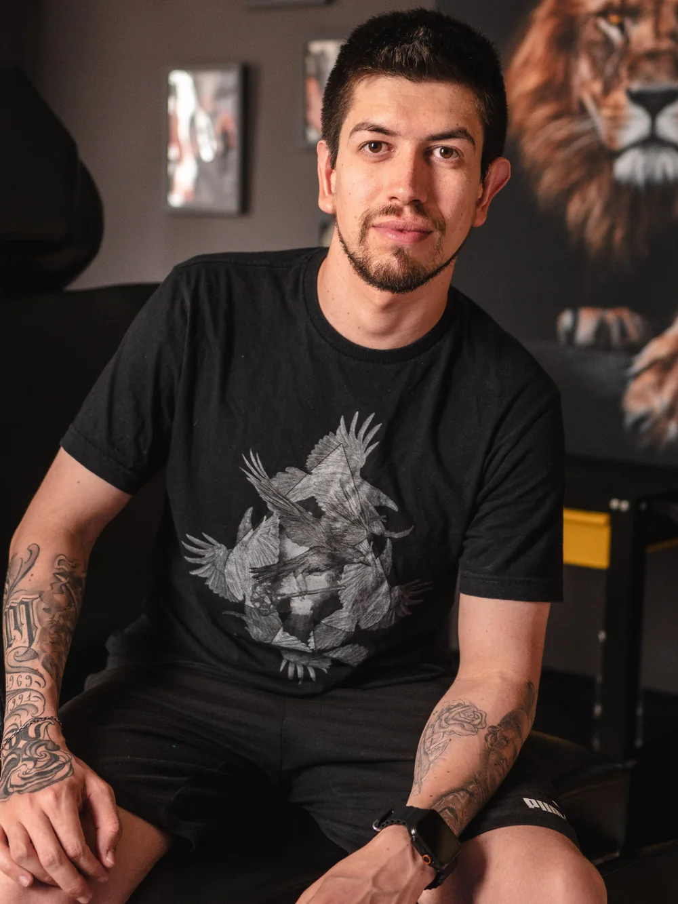

Projetos recentes

Anderson — Minas Tattoo
Muito prazer, sou o Anderson, mais conhecido como Minas. Desde criança sou fascinado pelo realismo no papel. Ao desenhar, mesmo sem perceber, meus rabiscos e rascunhos sempre tendiam à representação da realidade, principalmente em rostos e paisagens.
Ao entrar no mundo da tatuagem, o realismo continuou presente. Há mais de 6 anos venho eternizando momentos, histórias e emoções na pele dos meus clientes, com tatuagens detalhadas e com a mais alta qualidade!
Agora que contei um pouco da minha história, quero conhecer a sua! Clique no botão abaixo para conversarmos sobre suas ideias de tattoo!
Avaliações do Google
Veja o que os clientes contam depois de tatuar com o Minas.
Qual o valor de uma tatuagem com o Minas?
Uma sessão com o Minas custa em média de R$1.350 a R$2.000.
Preencha abaixo e fale com o Minas pelo WhatsApp